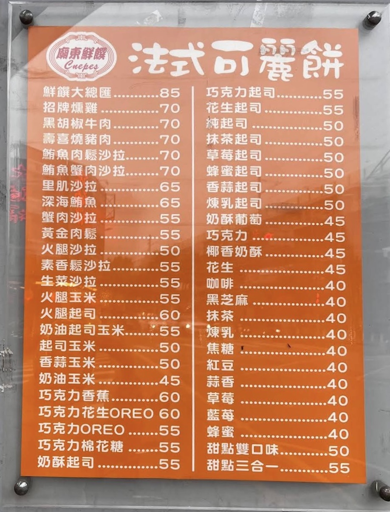

店家特色
鮮饌可麗餅以自營方式經營，與多數加盟品牌不同，保有更高的彈性與個性。店內口味在承接前一位經營者基礎上，逐步調整、優化，發展出屬於自己的風格。除了經典扇形可麗餅，也曾嘗試蛋捲式創新造型，讓餐點更方便食用，特別受到親子族群喜愛。對店家而言，沒有單一「招牌」，每一種口味都是為不同喜好而存在。
｜巷口的香甜，承載在地日常與歲月｜
鮮饌可麗餅以自營方式經營，與多數加盟品牌不同，保有更高的彈性與個性。店內口味在承接前一位經營者基礎上，逐步調整、優化，發展出屬於自己的風格。除了經典扇形可麗餅，也曾嘗試蛋捲式創新造型，讓餐點更方便食用，特別受到親子族群喜愛。對店家而言，沒有單一「招牌」，每一種口味都是為不同喜好而存在。


MENU